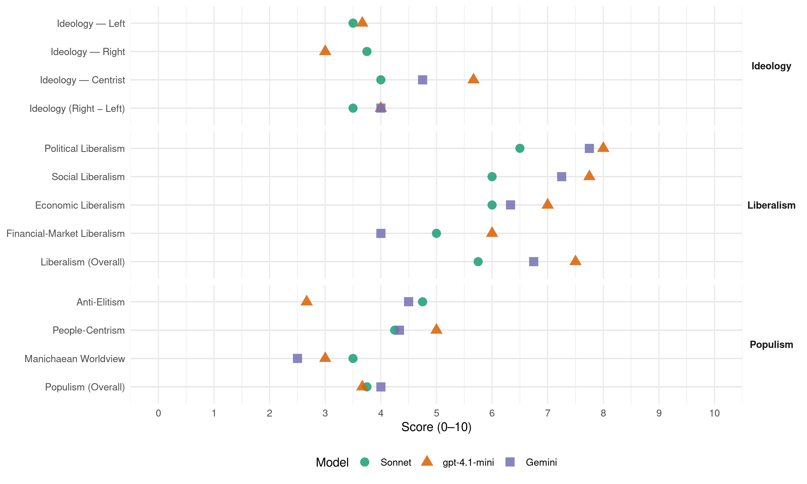

CD&V (Belgium, 2003)
manifesto_id 21521_200305
Get full text: This site shows derived annotations and short verbatim quotes only. The full manifesto text is © Manifesto Project / WZB — obtain it via manifesto-project.wzb.eu using the manifesto_id above.
Headline scores
| Dimension | Sonnet | gpt-4.1-mini | Gemini |
|---|---|---|---|
| Populism (Overall) | 3.8 | 3.7 | 4.0 |
| Anti-Elitism | 4.8 | 2.7 | 4.5 |
| People-Centrism | 4.2 | 5.0 | 4.3 |
| Manichaean Worldview | 3.5 | 3.0 | 2.5 |
| Ideology (Right − Left) | 3.5 | 4.0 | 4.0 |
| Liberalism (Overall) | 5.8 | 7.5 | 6.8 |
| Political Liberalism | 6.5 | 8.0 | 7.8 |
| Social Liberalism | 6.0 | 7.8 | 7.2 |
| Economic Liberalism | 6.0 | 7.0 | 6.3 |
| Financial-Market Liberalism | 5.0 | 6.0 | 4.0 |
Evidence per dimension
Economic Liberalism
Gemini · score 6.0 · verified · chunk 1
“Bedrijven hebben recht op een gunstig investeringsklimaat”
Iedereen heeft recht op beschikbare, betaalbare en betrouwbare gezondheidszorg. Gezinnen hebben recht op Kwali-Tijd. Bedrijven hebben recht op een gunstig investeringsklimaat.
Gemini · score 7.0 · verified · chunk 2
“vrijmaking van de elektriciteits- en aardgasmarkt”
Een daadwerkelijke vrijmaking van de elektriciteits- en aardgasmarkt via een echte scheiding van productie
Gemini · score 6.0 · verified · chunk 3
“regels van de vrije markt”
welzijnssector en de sociale woningbouw mogen niet zonder meer worden onderworpen aan de regels van de vrije markt. Wij christen-democraten kiezen resoluut
Gemini · score 5.0 · mixed · chunk 4
“geregisseerde marktwerking, en niet voor een platte commercialisering”
Wij christen-democraten kiezen resoluut voor een geregisseerde marktwerking, en niet voor een platte commercialisering van die sectoren.
gpt-4.1-mini · score 7.0 · verified · chunk 1
“De overheid moet een betrouwbare bondgenoot zijn”
De overheid moet een betrouwbare bondgenoot zijn. De Vlaamse christen-democraten geloven dat mensen samen het verschil kunnen maken. Wij geloven in de verantwoordelijkheidszin van de mensen.
gpt-4.1-mini · score 7.0 · verified · chunk 2
“een beleid voeren dat gunstige voorwaarden creëert zodat bedrijven aangemoedigd worden om te investeren”
Een gezonde en concurrentiële economie is zeer belangrijk voor de samenleving. Ze is de beste garantie voor een hoge werkgelegenheid. De overheid kan daartoe een beleid voeren dat gunstige voorwaarden creëert zodat bedrijven aangemoedigd worden om te investeren.
gpt-4.1-mini · score 7.0 · verified · chunk 3
“Kyoto: de inzet en het gebruik van verhandelbare emissierechten via een Europees ééngemaakte markt”
Kyoto: de inzet en het gebruik van verhandelbare emissierechten via een Europees ééngemaakte markt leiden naar een kostenefficiënte verdeling van reductieinspanningen over alle sectoren en doelgroepen heen (het globaal doel wordt gehaald tegen minimale kosten). Zo wordt er eerlijk rekening gehouden met de inspanningen die bedrijven in het verleden hebben geleverd en met de beste verhouding tussen economie en ecologie.
gpt-4.1-mini · score 7.0 · verified · chunk 4
“geregisseerde marktwerking, en niet voor een platte commercialisering”
Wij christen-democraten kiezen resoluut voor een geregisseerde marktwerking, en niet voor een platte commercialisering van die sectoren. De overheid moet een markt ‘regisseren’ waarin, onder welbepaalde spelregels, de verschillende dienstverleners dingen naar de gunst van de consument.
Sonnet · score 5.0 · mixed · chunk 1
“gunstig investeringsklimaat”
Bedrijven hebben recht op een gunstig investeringsklimaat. Mensen hebben recht op werk op hun eigen maat.
Sonnet · score 6.0 · verified · chunk 2
“vrijmaking van de elektriciteits- en aardgasmarkt”
Een daadwerkelijke vrijmaking van de elektriciteits- en aardgasmarkt via een echte scheiding van productie en verkoop enerzijds en netwerken (transport/distributie) anderzijds.
Sonnet · score 5.0 · mixed · chunk 3
“geregisseerde marktwerking, en niet voor een platte commercialisering”
Wij christen-democraten kiezen resoluut voor een geregisseerde marktwerking, en niet voor een platte commercialisering van die sectoren.
Sonnet · score 5.0 · mixed · chunk 4
“geregisseerde marktwerking, en niet voor een platte commercialisering”
Wij christen-democraten kiezen resoluut voor een geregisseerde marktwerking, en niet voor een platte commercialisering van die sectoren.
Financial-Market Liberalism
Gemini · score 4.0 · verified · chunk 4
“democratisering van de internationale financiële instellingen”
aandringen op de democratisering van de internationale financiële instellingen, Internationaal Muntfonds en Wereldbank.
gpt-4.1-mini · score 6.0 · verified · chunk 2
“een algemene mededingingsautoriteit – een zelfstandig overheidsorgaan – die actief optreedt”
Eén sterke geïntegreerde mededingingsautoriteit – een zelfstandig overheidsorgaan – die actief optreedt en waakt over een goede marktwerking.
gpt-4.1-mini · score 6.0 · verified · chunk 3
“De financiële informatie is in België nog zeker niet optimaal, maar dat is een kwestie van cultuur”
De financiële informatie is in België nog zeker niet optimaal, maar dat is een kwestie van cultuur die steeds verbetert. Het zou fout zijn om het aantal rapporteringen nu op te drijven (van semester naar kwartaal bijvoorbeeld, zoals in de US reeds het geval is). Dat bevordert het denken op korte termijn.
Sonnet · score 5.0 · mixed · chunk 1
“eerlijke concurrentie komen op het vlak van de aanvullende ziekteverzekeringen”
Bovendien moet er ook een eerlijke concurrentie komen op het vlak van de aanvullende ziekteverzekeringen, door het opleggen van gemeenschappelijke regels van algemeen belang.
Sonnet · score 6.0 · verified · chunk 2
“toegang tot kapitaalverschaffers te vergemakkelijken”
Concreet betekent dit dat de drempels voor de oprichting van een onderneming omlaag moeten. Dat kan door het sociaal statuut van zelfstandigen te verbeteren, de toegang tot kapitaalverschaffers te vergemakkelijken
Sonnet · score 5.0 · verified · chunk 3
“financiële informatie is in België nog zeker niet optimaal”
De financiële informatie is in België nog zeker niet optimaal, maar dat is een kwestie van cultuur die steeds verbetert. Het zou fout zijn om het aantal rapporteringen nu op te drijven
Sonnet · score 4.0 · verified · chunk 4
“financiële criminaliteit (witwasoperaties en belastingparadijzen)”
Het bestrijden van de financiële criminaliteit (witwasoperaties en belastingparadijzen).
Political Liberalism
Gemini · score 8.0 · verified · chunk 1
“Veel culturen, één rechtsstaat”
Vechten voor menselijkheid. 2.4.6 Drugs. Niet met ons. 2.4.7 Veel culturen, één rechtsstaat. 2.5 INVESTEREN IN DE TOEKOMST.
Gemini · score 7.0 · verified · chunk 2
“representatieve democratie. Het probleem van de”
CD&V staat garant voor een goed werkende representatieve democratie. Het probleem van de democratie is niet zozeer een
Gemini · score 8.0 · verified · chunk 3
“basisbeginselen van de democratische rechtsstaat”
gevoerd te worden met inachtneming van de basisbeginselen van de democratische rechtsstaat, waaronder parlementaire controle op maatregelen
Gemini · score 8.0 · verified · chunk 4
“een efficiënt, nabij en democratisch bestuur”
Ons uitgangspunt is het belang van de mensen, dat gediend is met een efficiënt, nabij en democratisch bestuur.
gpt-4.1-mini · score 8.0 · verified · chunk 1
“Politiek moet opnieuw op lange termijn durven denken en handelen”
Politiek moet opnieuw op lange termijn durven denken en handelen. Er is meer moed en waarheid nodig in de politiek. Want leugen en bedrog ondergraven de betrouwbaarheid van de overheid.
gpt-4.1-mini · score 8.0 · verified · chunk 2
“investeren in een degelijke, krachtdadige, snelle en correcte werking van het gerecht”
Om het vertrouwen in de publieke instellingen te verbeteren, willen we voluit investeren in een degelijke, krachtdadige, snelle en correcte werking van het gerecht, de administratie en de fiscus.
gpt-4.1-mini · score 8.0 · verified · chunk 3
“parlementaire controle op maatregelen en acties tegen terrorisme en toegang tot de rechter”
Hij dient gevoerd te worden met inachtneming van de basisbeginselen van de democratische rechtsstaat, waaronder parlementaire controle op maatregelen en acties tegen terrorisme en toegang tot de rechter om de handelingen van overheden te toetsen, en met eerbied voor de kernbeginselen van de rechten van de mens en van het internationaal humanitair recht.
gpt-4.1-mini · score 8.0 · verified · chunk 4
“de uitbouw van een Europese representatieve democratie”
- CD&V pleit voor de uitbouw van een Europese representatieve democratie, waar niet alleen de Europese sociale partners via een gestructureerd overleg, maar ook de civiele samenleving kunnen deelnemen aan Europese besluitvorming.
Sonnet · score 6.0 · verified · chunk 1
“parlementair debat”
de grote ambities van ons stelsel van ziekteverzekering onderwerp moet zijn van een publiek, parlementair debat. De overheid bewaakt daarbij de fundamentele streefdoelen
Sonnet · score 7.0 · verified · chunk 2
“goed werkende representatieve democratie”
CD&V staat garant voor een goed werkende representatieve democratie. Het probleem van de democratie is niet zozeer een probleem van nabijheid, maar van een tekort aan controle.
Sonnet · score 6.0 · verified · chunk 3
“parlementaire controle op maatregelen en acties”
Hij dient gevoerd te worden met inachtneming van de basisbeginselen van de democratische rechtsstaat, waaronder parlementaire controle op maatregelen en acties tegen terrorisme en toegang tot de rechter om de handelingen van overheden te toetsen
Sonnet · score 7.0 · verified · chunk 4
“Europese representatieve democratie”
CD&V pleit voor de uitbouw van een Europese representatieve democratie, waar niet alleen de Europese sociale partners
Liberalism (Overall)
Gemini · score 7.0 · verified · chunk 1
“Veel culturen, één rechtsstaat”
Vechten voor menselijkheid. 2.4.6 Drugs. Niet met ons. 2.4.7 Veel culturen, één rechtsstaat. 2.5 INVESTEREN IN DE TOEKOMST.
Gemini · score 7.0 · verified · chunk 2
“vrijmaking van de elektriciteits- en aardgasmarkt”
Een daadwerkelijke vrijmaking van de elektriciteits- en aardgasmarkt via een echte scheiding van productie
Gemini · score 7.0 · verified · chunk 3
“basisbeginselen van de democratische rechtsstaat”
gevoerd te worden met inachtneming van de basisbeginselen van de democratische rechtsstaat, waaronder parlementaire controle op maatregelen
Gemini · score 6.0 · verified · chunk 4
“een efficiënt, nabij en democratisch bestuur”
Ons uitgangspunt is het belang van de mensen, dat gediend is met een efficiënt, nabij en democratisch bestuur.
gpt-4.1-mini · score 8.0 · verified · chunk 1
“Politiek moet opnieuw op lange termijn durven denken en handelen”
Politiek moet opnieuw op lange termijn durven denken en handelen. Er is meer moed en waarheid nodig in de politiek. Want leugen en bedrog ondergraven de betrouwbaarheid van de overheid.
gpt-4.1-mini · score 7.0 · verified · chunk 2
“investeren in een degelijke, krachtdadige, snelle en correcte werking van het gerecht”
Om het vertrouwen in de publieke instellingen te verbeteren, willen we voluit investeren in een degelijke, krachtdadige, snelle en correcte werking van het gerecht, de administratie en de fiscus.
gpt-4.1-mini · score 7.0 · verified · chunk 3
“parlementaire controle op maatregelen en acties tegen terrorisme en toegang tot de rechter”
Hij dient gevoerd te worden met inachtneming van de basisbeginselen van de democratische rechtsstaat, waaronder parlementaire controle op maatregelen en acties tegen terrorisme en toegang tot de rechter om de handelingen van overheden te toetsen, en met eerbied voor de kernbeginselen van de rechten van de mens en van het internationaal humanitair recht.
gpt-4.1-mini · score 8.0 · verified · chunk 4
“CD&V pleit voor verbondenheid en solidariteit, ook in Europa”
- CD&V pleit voor verbondenheid en solidariteit, ook in Europa. Daarom is CD&V voorstander van een prominente plaats voor het sociale luik in de toekomstige Europese verdragsteksten.
Sonnet · score 6.0 · verified · chunk 1
“geregisseerde marktwerking”
Wij christen-democraten kiezen resoluut voor een geregisseerde marktwerking, en niet voor een platte commercialisering van die sectoren.
Sonnet · score 6.0 · verified · chunk 2
“vrijmaking van de elektriciteits- en aardgasmarkt”
Een daadwerkelijke vrijmaking van de elektriciteits- en aardgasmarkt via een echte scheiding van productie en verkoop enerzijds en netwerken (transport/distributie) anderzijds.
Sonnet · score 5.0 · verified · chunk 3
“basisbeginselen van de democratische rechtsstaat”
Hij dient gevoerd te worden met inachtneming van de basisbeginselen van de democratische rechtsstaat, waaronder parlementaire controle op maatregelen en acties tegen terrorisme
Sonnet · score 6.0 · verified · chunk 4
“transparanter, efficiënter en democratischer te maken”
Hervormingen zijn daarom dringend nodig om de werking van de EU transparanter, efficiënter en democratischer te maken.
Anti-Elitism
Gemini · score 4.0 · verified · chunk 1
“Blauwroodgroen heeft vooral willen ‘scoren’ via communicatie”
Blauwroodgroen heeft noch snel noch efficiënt bestuurd. Blauwroodgroen heeft vooral willen ‘scoren’ via communicatie en via een onophoudelijke ‘goed-nieuws-show’.
Gemini · score 6.0 · verified · chunk 2
“Blauwroodgroen heeft vooral aan zichzelf gedacht”
antwoordelijkheid. Want blauwroodgroen heeft vooral aan zichzelf gedacht en veel minder aan de volgende generaties
Gemini · score 4.0 · verified · chunk 3
“blauwroodgroen heeft ook een potje gemaakt”
politiehervorming die blauwroodgroen doorvoerde, heeft niet voor meer, maar juist voor minder blauw op straat gezorgd. Blauwroodgroen heeft ook een potje gemaakt van de cijfers van vastgestelde misdrijven.
Gemini · score 4.0 · verified · chunk 4
“een ploeg van ruziemakende ministers”
CD&V wil breken met een ploeg van ruziemakende ministers die de problemen niet aanpakken.
gpt-4.1-mini · score 3.0 · verified · chunk 1
“Blauwroodgroen schoof de begrotingsproblemen door naar de toekomst”
Blauwroodgroen schoof de begrotingsproblemen door naar de toekomst en wentelde een factuur van 5 miljard euro af op de volgende regering. Blauwroodgroen heeft noch snel noch efficiënt bestuurd.
gpt-4.1-mini · score 2.0 · verified · chunk 2
“Blauwroodgroen heeft vooral aan zichzelf gedacht”
De oorzaak van dat falen op 11 september afwentelen, is al te gemakkelijk. De blauwroodgroene regering draagt wel degelijk verantwoordelijkheid. Want blauwroodgroen heeft vooral aan zichzelf gedacht en veel minder aan de volgende generaties of aan het verbreden van het economisch draagvlak.
gpt-4.1-mini · score 3.0 · verified · chunk 3
“Blauwroodgroen heeft ook een potje gemaakt van de cijfers”
De politiehervorming die blauwroodgroen doorvoerde, heeft niet voor meer, maar juist voor minder blauw op straat gezorgd. Blauwroodgroen heeft ook een potje gemaakt van de cijfers van vastgestelde misdrijven.
Sonnet · score 5.0 · verified · chunk 1
“Blauwroodgroen heeft noch snel noch efficiënt bestuurd”
Er is meer criminaliteit en meer gerechtelijke achterstand. Blauwroodgroen heeft noch snel noch efficiënt bestuurd. Blauwroodgroen heeft vooral willen ‘scoren’ via communicatie
Sonnet · score 4.0 · verified · chunk 2
“blauwroodgroen heeft vooral aan zichzelf gedacht”
De blauwroodgroene regering draagt wel degelijk verantwoordelijkheid. Want blauwroodgroen heeft vooral aan zichzelf gedacht en veel minder aan de volgende generaties
Sonnet · score 5.0 · verified · chunk 3
“blauwroodgroen heeft een potje gemaakt”
De politiehervorming die blauwroodgroen doorvoerde, heeft niet voor meer, maar juist voor minder blauw op straat gezorgd. Blauwroodgroen heeft ook een potje gemaakt van de cijfers van vastgestelde misdrijven.
Sonnet · score 5.0 · verified · chunk 4
“blauwroodgroen begraven”
De destijds ruim gedragen vijf resoluties van het Vlaams Parlement van 3 maart 1999 zijn door blauwroodgroen begraven.
Ideology — Centrist
Gemini · score 5.0 · verified · chunk 1
“voorrang geeft aan de mensen en aan de samenleving”
CD&V is een eigentijdse christen-democratische volkspartij die precies daarom voorrang geeft aan de mensen en aan de samenleving.
Gemini · score 6.0 · verified · chunk 2
“Blauwroodgroen heeft vooral aan zichzelf gedacht”
antwoordelijkheid. Want blauwroodgroen heeft vooral aan zichzelf gedacht en veel minder aan de volgende generaties
Gemini · score 4.0 · verified · chunk 3
“in overleg met buurten en bevolking”
veiligheid van onderuit, wijkgericht en in overleg met buurten en bevolking aan te pakken: lokale recrutering, voldoende ruimte
Gemini · score 4.0 · verified · chunk 4
“belang van de mensen, dat gediend is”
Ons uitgangspunt is het belang van de mensen, dat gediend is met een efficiënt, nabij en democratisch bestuur.
gpt-4.1-mini · score 7.0 · verified · chunk 1
“Wij kiezen niet voor ‘de burger’, ook niet voor ‘de staat’ maar voor mensen”
Wij kiezen niet voor ‘de burger’, ook niet voor ‘de staat’ maar voor mensen, verbonden met elkaar in de samenleving. Overal waar mensen, geïnspireerd door waarden als zorgzaamheid, verantwoordelijkheid, solidariteit en duurzaamheid initiatief nemen, mag de overheid geen hindermacht zijn.
gpt-4.1-mini · score 4.0 · verified · chunk 2
“Blauwroodgroen verdedigt de liberale burgerdemocratie”
Blauwroodgroen blijft de liberale burgerdemocratie verdedigen. De burgerdemocratie wil alle tussenschotten tussen burger en overheid wegwerken.
gpt-4.1-mini · score 6.0 · verified · chunk 3
“veiligheid en leefbaarheid geen zaak van de overheid alleen, maar van de hele gemeenschap”
Voor CD&V zijn veiligheid en leefbaarheid geen zaak van de overheid alleen, maar van de hele gemeenschap. CD&V geeft de politie alle ruimte om de zorg voor meer leefbaarheid en veiligheid van onderuit, wijkgericht en in overleg met buurten en bevolking aan te pakken
Sonnet · score 4.0 · verified · chunk 1
“een eigentijdse christen-democratische volkspartij”
CD&V is een eigentijdse christen-democratische volkspartij die precies daarom voorrang geeft aan de mensen en aan de samenleving.
Sonnet · score 4.0 · verified · chunk 2
“dicht bij de mensen staat”
CD&V wil de gemeenten en steden, het overheidsniveau dat het dichtst bij de mensen staat, veel meer uitspelen als centraal aanspreekpunt voor overheidsdiensten
Sonnet · score 4.0 · verified · chunk 3
“verwerpt elk sloganmatig denken en extreme oplossingen”
CD&V erkent de complexiteit van het migratie– en asieldebat en gaat het niet uit de weg. CD&V verwerpt elk sloganmatig denken en extreme oplossingen voor de migratieuitdagingen.
Sonnet · score 4.0 · verified · chunk 4
“democratie van de verbondenheid”
Vanuit onze keuze voor een ‘democratie van de verbondenheid’ is het voor de Vlaamse christen-democraten belangrijk
Ideology — Left
gpt-4.1-mini · score 5.0 · verified · chunk 1
“Wij bedanken dan ook resoluut voor een Angelsaksisch en neoliberaal model”
Wij bedanken dan ook resoluut voor een Angelsaksisch en neoliberaal model waar hoge inkomens goede zorgen en diensten kunnen kopen, terwijl de mensen met een midden of laag inkomen aangewezen zijn op minderwaardige dienstverlening.
gpt-4.1-mini · score 3.0 · verified · chunk 2
“Blauwroodgroen heeft niet voor duurzame economische groei gezorgd”
DE ANALYSE VAN BLAUWROODGROEN. Blauwroodgroen heeft niet voor duurzame economische groei gezorgd. De oorzaak van dat falen op 11 september afwentelen, is al te gemakkelijk.
gpt-4.1-mini · score 3.0 · verified · chunk 3
“een op insluiting van alle mensen gericht sociaal-economisch beleid dat niet discrimineert”
- een op insluiting van alle mensen gericht sociaal-economisch beleid dat niet discrimineert maar mensen écht kansen geeft. - gerichte preventieve controles om inbraken, ramkraken, overvallen enz. te voorkomen.
Sonnet · score 3.0 · verified · chunk 1
“Wij bedanken dan ook resoluut voor een Angelsaksisch en neoliberaal model”
Wij bedanken dan ook resoluut voor een Angelsaksisch en neoliberaal model waar hoge inkomens goede zorgen en diensten kunnen kopen, terwijl de mensen met een midden of laag inkomen aangewezen zijn op minderwaardige dienstverlening.
Sonnet · score 3.0 · verified · chunk 2
“herverdelen van welvaart”
We willen een gezagvolle, handhavende en sterke overheid voor de uitoefening van kerntaken zoals correcte inning van belastingen, herverdelen van welvaart, een veilige samenleving
Sonnet · score 3.0 · verified · chunk 3
“solidariteit in ere herstellen”
Fraude bestrijden is de solidariteit in ere herstellen. CD&V wil het instrument van de administratieve sancties…
Sonnet · score 5.0 · verified · chunk 4
“uitroeiing van armoede, naar hoge sociale bescherming”
dat Europa streeft naar volledige en kwalitatieve werkgelegenheid, naar uitroeiing van armoede, naar hoge sociale bescherming
Ideology (Right − Left)
Gemini · score 4.0 · verified · chunk 1
“voorrang geeft aan de mensen en aan de samenleving”
CD&V is een eigentijdse christen-democratische volkspartij die precies daarom voorrang geeft aan de mensen en aan de samenleving.
Gemini · score 6.0 · verified · chunk 2
“Blauwroodgroen heeft vooral aan zichzelf gedacht”
antwoordelijkheid. Want blauwroodgroen heeft vooral aan zichzelf gedacht en veel minder aan de volgende generaties
Gemini · score 3.0 · verified · chunk 3
“in overleg met buurten en bevolking”
veiligheid van onderuit, wijkgericht en in overleg met buurten en bevolking aan te pakken: lokale recrutering, voldoende ruimte
Gemini · score 3.0 · verified · chunk 4
“belang van de mensen, dat gediend is”
Ons uitgangspunt is het belang van de mensen, dat gediend is met een efficiënt, nabij en democratisch bestuur.
gpt-4.1-mini · score 5.0 · verified · chunk 1
“Wij kiezen niet voor ‘de burger’, ook niet voor ‘de staat’ maar voor mensen”
Wij kiezen niet voor ‘de burger’, ook niet voor ‘de staat’ maar voor mensen, verbonden met elkaar in de samenleving. Overal waar mensen, geïnspireerd door waarden als zorgzaamheid, verantwoordelijkheid, solidariteit en duurzaamheid initiatief nemen, mag de overheid geen hindermacht zijn.
gpt-4.1-mini · score 3.0 · verified · chunk 2
“Blauwroodgroen legt de verkeerde klemtonen”
DE ANALYSE VAN BLAUWROODGROEN. Blauwroodgroen legt de verkeerde klemtonen. Zij hebben veel aandacht voor bijkomstigheden in plaats van alle aandacht te richten op structurele maatregelen.
gpt-4.1-mini · score 4.0 · verified · chunk 3
“Blauwroodgroen heeft ook een potje gemaakt van de cijfers”
De politiehervorming die blauwroodgroen doorvoerde, heeft niet voor meer, maar juist voor minder blauw op straat gezorgd. Blauwroodgroen heeft ook een potje gemaakt van de cijfers van vastgestelde misdrijven.
Sonnet · score 3.0 · verified · chunk 1
“CD&V kiest voor mensen en waarden”
CD&V kiest ‘voor mensen en waarden’ omdat mensen zelf belangrijke waarden, die in onze samenleving op hun kop zijn gezet, opnieuw in ere moeten herstellen.
Sonnet · score 3.0 · verified · chunk 2
“blauwroodgroen heeft niet voor duurzame economische groei gezorgd”
DE ANALYSE VAN BLAUWROODGROEN. Blauwroodgroen heeft niet voor duurzame economische groei gezorgd. De oorzaak van dat falen op 11 september afwentelen, is al te gemakkelijk.
Sonnet · score 4.0 · verified · chunk 3
“blauwroodgroen heeft een potje gemaakt”
Blauwroodgroen heeft ook een potje gemaakt van de cijfers van vastgestelde misdrijven.
Sonnet · score 4.0 · verified · chunk 4
“geregisseerde marktwerking, en niet voor een platte commercialisering”
Wij christen-democraten kiezen resoluut voor een geregisseerde marktwerking, en niet voor een platte commercialisering van die sectoren.
Ideology — Right
gpt-4.1-mini · score 3.0 · verified · chunk 1
“Veel culturen, één rechtsstaat”
2.4.7 Veel culturen, één rechtsstaat. CD&V is een eigentijdse christen-democratische volkspartij die voorrang geeft aan de mensen en aan de samenleving.
gpt-4.1-mini · score 3.0 · verified · chunk 3
“de eigenheid van de mensen, zowel autochtoon als allochtoon, ernstig”
Een eerlijk integratiebeleid neemt de eigenheid van de mensen, zowel autochtoon als allochtoon, ernstig. Tegelijk is het politieke doel van het integratiebeleid alle burgers aan onze samenleving te laten participeren.
Sonnet · score 2.0 · verified · chunk 1
“Veel culturen, één rechtsstaat”
2.4.7 Veel culturen, één rechtsstaat. The manifesto emphasises integration requirements and rule of law in a multicultural context.
Sonnet · score 3.0 · verified · chunk 2
“integratiebereidheid blijft een noodzakelijke voorwaarde”
Integratiebereidheid blijft een noodzakelijke voorwaarde voor (formele) politieke participatie. De snel-Belg-wet en de voorstellen inzake migrantenstemrecht nodigen nieuwkomers
Sonnet · score 5.0 · verified · chunk 3
“geen open grenzen, maar ook niet”
CD&V verwerpt elk sloganmatig denken en extreme oplossingen voor de migratieuitdagingen. Dat wil zeggen geen open grenzen, maar ook niet de valse retoriek van migratiestop.
Sonnet · score 5.0 · verified · chunk 4
“eigen identiteit van Europa en de Europese Unie”
Ze miskent daardoor de eigen identiteit van Europa en de Europese Unie en ondergraaft bijgevolg de eigen, specifieke rol
Manichaean Worldview
Gemini · score 3.0 · verified · chunk 1
“leugen en bedrog ondergraven de betrouwbaarheid”
Er is meer moed en waarheid nodig in de politiek. Want leugen en bedrog ondergraven de betrouwbaarheid van de overheid.
Gemini · score 2.0 · verified · chunk 4
“onbehoorlijk bestuur te maskeren”
In werkelijkheid diende ze enkel om het onbehoorlijk bestuur te maskeren.
gpt-4.1-mini · score 2.0 · verified · chunk 1
“leugen en bedrog ondergraven de betrouwbaarheid van de overheid”
Politiek moet opnieuw op lange termijn durven denken en handelen. Er is meer moed en waarheid nodig in de politiek. Want leugen en bedrog ondergraven de betrouwbaarheid van de overheid.
gpt-4.1-mini · score 3.0 · verified · chunk 2
“Blauwroodgroen legt de verkeerde klemtonen”
DE ANALYSE VAN BLAUWROODGROEN. Blauwroodgroen legt de verkeerde klemtonen. Zij hebben veel aandacht voor bijkomstigheden in plaats van alle aandacht te richten op structurele maatregelen.
gpt-4.1-mini · score 4.0 · verified · chunk 3
“Potentiële criminelen mogen de kans niet krijgen om via misbruik van de administratie criminele feiten te verdoezelen”
Voor CD&V is het veiligheidsbeleid niet enkel een zaak van politie en justitie maar van álle besturen: van de gemeenten, over het Vlaamse niveau tot het federale en het Europese. Wij willen dat alle besturen, dus niet alleen de politie en het parket, alert reageren op concrete vermoedens van (georganiseerde) criminaliteit. (Potentiële) criminelen mogen de kans niet krijgen om via misbruik van de administratie criminele feiten te verdoezelen
Sonnet · score 4.0 · verified · chunk 1
“leugen en bedrog ondergraven de betrouwbaarheid”
Er is meer moed en waarheid nodig in de politiek. Want leugen en bedrog ondergraven de betrouwbaarheid van de overheid.
Sonnet · score 3.0 · verified · chunk 2
“blauwroodgroen heeft niet voor duurzame economische groei gezorgd”
DE ANALYSE VAN BLAUWROODGROEN. Blauwroodgroen heeft niet voor duurzame economische groei gezorgd. De oorzaak van dat falen op 11 september afwentelen, is al te gemakkelijk.
Sonnet · score 3.0 · verified · chunk 3
“Groene, socialistische en liberale partijen willen meer absolute vrijheid”
Groene, socialistische en liberale partijen willen meer absolute vrijheid en minder bescherming van kwetsbare mensen. Die keuze is niet de onze.
Sonnet · score 4.0 · verified · chunk 4
“blind voluntarisme dat alles, ook het goede”
De politiek kwam in de greep van een blind voluntarisme dat alles, ook het goede dat door anderen was gerealiseerd, wilde wijzigen.
People-Centrism
Gemini · score 5.0 · verified · chunk 1
“christen-democratische volkspartij die precies daarom voorrang geeft”
CD&V is een eigentijdse christen-democratische volkspartij die precies daarom voorrang geeft aan de mensen en aan de samenleving.
Gemini · score 5.0 · verified · chunk 3
“in overleg met buurten en bevolking”
veiligheid van onderuit, wijkgericht en in overleg met buurten en bevolking aan te pakken: lokale recrutering, voldoende ruimte
Gemini · score 3.0 · verified · chunk 4
“politieke structuren dicht bij de mensen”
is het voor de Vlaamse christen-democraten belangrijk dat politieke structuren dicht bij de mensen staan en duidelijk en eenvoudig zijn.
gpt-4.1-mini · score 7.0 · verified · chunk 1
“Wij kiezen niet voor ‘de burger’, ook niet voor ‘de staat’ maar voor mensen”
Wij kiezen niet voor ‘de burger’, ook niet voor ‘de staat’ maar voor mensen, verbonden met elkaar in de samenleving. Overal waar mensen, geïnspireerd door waarden als zorgzaamheid, verantwoordelijkheid, solidariteit en duurzaamheid initiatief nemen, mag de overheid geen hindermacht zijn.
gpt-4.1-mini · score 3.0 · verified · chunk 2
“Vlamingen zijn van oudsher gedreven mensen”
Vlamingen zijn van oudsher gedreven mensen. Gedrevenheid betekent geen genoegen nemen met wat er is. Steeds was er de wil om vooruit te komen. Het is alles anders en beter willen maken.
gpt-4.1-mini · score 5.0 · verified · chunk 3
“veiligheid en leefbaarheid geen zaak van de overheid alleen, maar van de hele gemeenschap”
Voor CD&V zijn veiligheid en leefbaarheid geen zaak van de overheid alleen, maar van de hele gemeenschap. CD&V geeft de politie alle ruimte om de zorg voor meer leefbaarheid en veiligheid van onderuit, wijkgericht en in overleg met buurten en bevolking aan te pakken
Sonnet · score 5.0 · verified · chunk 1
“mensen zelf belangrijke waarden”
CD&V kiest ‘voor mensen en waarden’ omdat mensen zelf belangrijke waarden, die in onze samenleving op hun kop zijn gezet, opnieuw in ere moeten herstellen.
Sonnet · score 3.0 · verified · chunk 2
“dicht bij de mensen staat”
CD&V wil de gemeenten en steden, het overheidsniveau dat het dichtst bij de mensen staat, veel meer uitspelen als centraal aanspreekpunt
Sonnet · score 4.0 · verified · chunk 3
“van de mensen die een groter risico lopen”
CD&V vertrekt in de eerste plaats van de concrete slachtoffers en van de mensen die een groter risico lopen om slachtoffer van een misdrijf te worden.
Sonnet · score 5.0 · verified · chunk 4
“politieke structuren dicht bij de mensen staan”
is het voor de Vlaamse christen-democraten belangrijk dat politieke structuren dicht bij de mensen staan en duidelijk en eenvoudig zijn.
Populism (Overall)
Gemini · score 4.0 · verified · chunk 1
“christen-democraten vertegenwoordigen niet alleen mensen”
Wij willen ook op een andere manier aan politiek doen. Christen-democraten vertegenwoordigen niet alleen mensen, maar doen aan politiek samen met mensen.
Gemini · score 6.0 · verified · chunk 2
“Blauwroodgroen heeft vooral aan zichzelf gedacht”
antwoordelijkheid. Want blauwroodgroen heeft vooral aan zichzelf gedacht en veel minder aan de volgende generaties
Gemini · score 3.0 · verified · chunk 3
“blauwroodgroen heeft ook een potje gemaakt”
politiehervorming die blauwroodgroen doorvoerde, heeft niet voor meer, maar juist voor minder blauw op straat gezorgd. Blauwroodgroen heeft ook een potje gemaakt van de cijfers van vastgestelde misdrijven.
Gemini · score 3.0 · verified · chunk 4
“een ploeg van ruziemakende ministers”
CD&V wil breken met een ploeg van ruziemakende ministers die de problemen niet aanpakken.
gpt-4.1-mini · score 4.0 · verified · chunk 1
“Blauwroodgroen schoof de begrotingsproblemen door naar de toekomst”
Blauwroodgroen schoof de begrotingsproblemen door naar de toekomst en wentelde een factuur van 5 miljard euro af op de volgende regering. Blauwroodgroen heeft noch snel noch efficiënt bestuurd.
gpt-4.1-mini · score 3.0 · verified · chunk 2
“Blauwroodgroen legt de verkeerde klemtonen”
DE ANALYSE VAN BLAUWROODGROEN. Blauwroodgroen legt de verkeerde klemtonen. Zij hebben veel aandacht voor bijkomstigheden in plaats van alle aandacht te richten op structurele maatregelen.
gpt-4.1-mini · score 4.0 · verified · chunk 3
“Blauwroodgroen heeft ook een potje gemaakt van de cijfers”
De politiehervorming die blauwroodgroen doorvoerde, heeft niet voor meer, maar juist voor minder blauw op straat gezorgd. Blauwroodgroen heeft ook een potje gemaakt van de cijfers van vastgestelde misdrijven.
Sonnet · score 4.0 · verified · chunk 1
“Het is tijd voor verandering”
De kiezer kan dat stembusakkoord doorbreken. Het is tijd voor verandering. Het is tijd voor een politiek beleid dat mensen respecteert
Sonnet · score 3.0 · verified · chunk 2
“blauwroodgroen heeft vooral aan zichzelf gedacht”
De blauwroodgroene regering draagt wel degelijk verantwoordelijkheid. Want blauwroodgroen heeft vooral aan zichzelf gedacht en veel minder aan de volgende generaties
Sonnet · score 4.0 · verified · chunk 3
“blauwroodgroen heeft een potje gemaakt”
Blauwroodgroen heeft ook een potje gemaakt van de cijfers van vastgestelde misdrijven. Zo wijken de cijfers die Verhofstadt in het raam van de begrotingsdiscussie tevoorschijn toverde, sterk af van de officiële cijfers.
Sonnet · score 4.0 · verified · chunk 4
“onbehoorlijk bestuur loopt als een rode draad”
Onbehoorlijk bestuur loopt als een rode draad door vier jaar blauwroodgroen beleid inzake ontwikkelingssamenwerking.
Social Liberalism